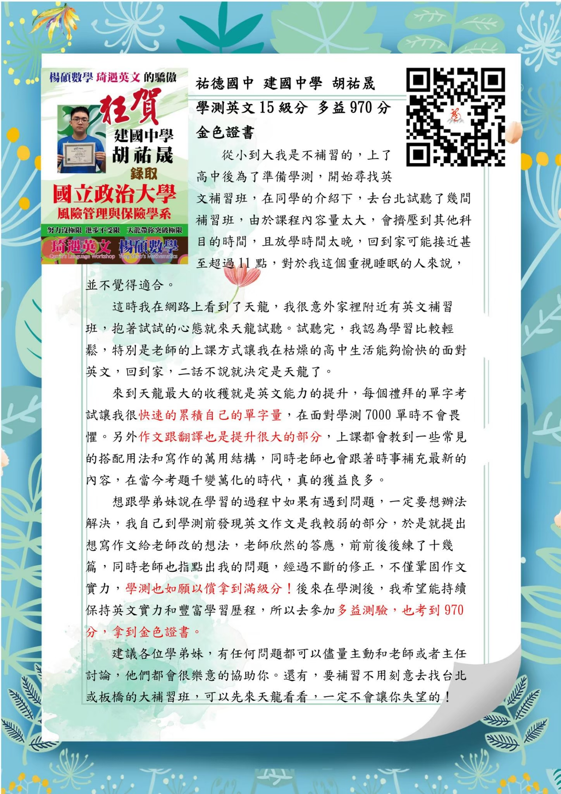
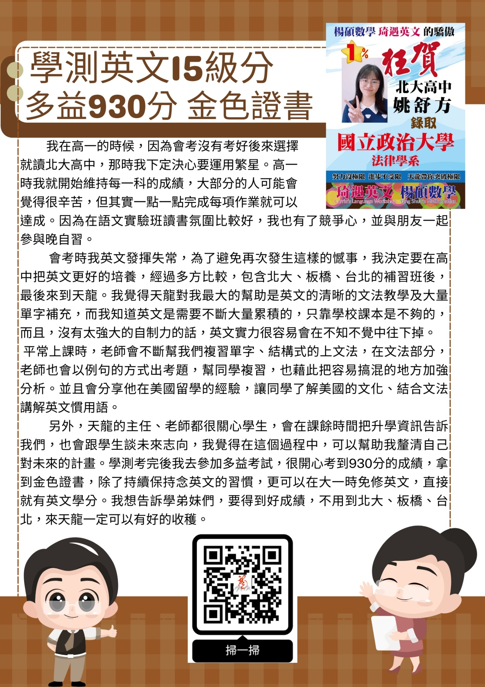
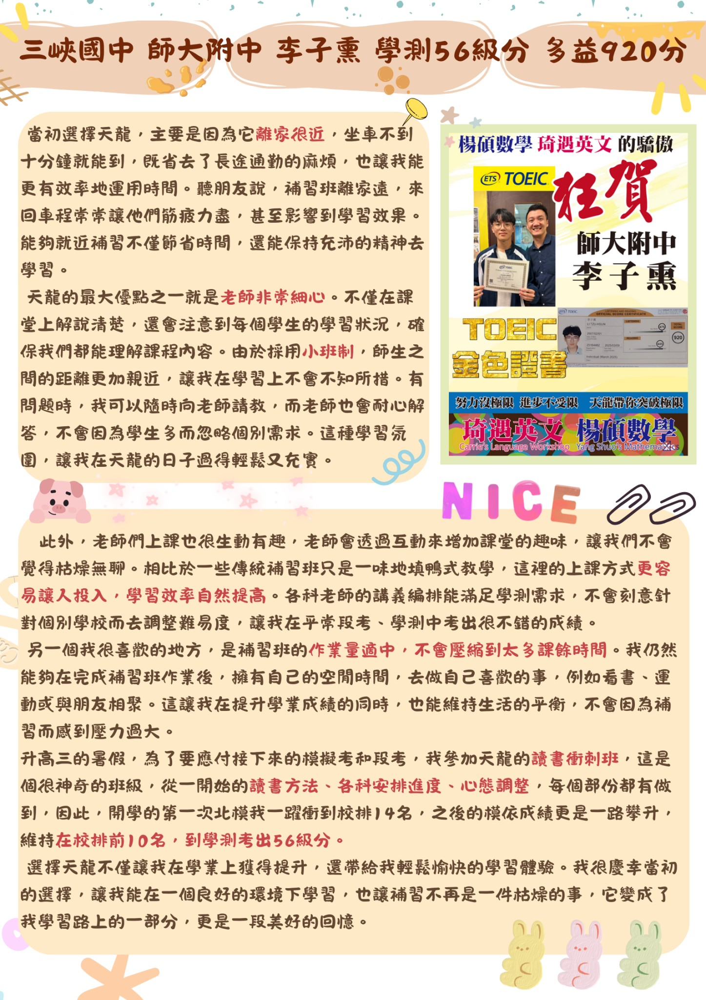
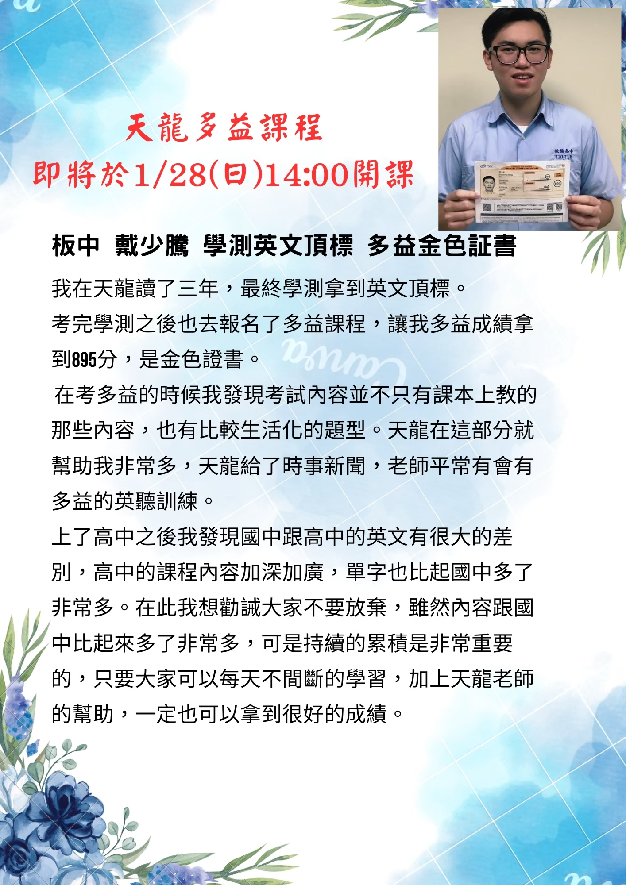

Robert 老師
留美歸國名師精準拆解單字，重塑英文邏輯
● 英文單字拆解法
● 單字不再死背
● 強化學測英文廣度與深度
● 即時時事補充
●掌握大考命題趨勢
● 邏輯式文法教學
● 讓作文分數大跳躍
課程特色
- ✔ 語感培養： 大量閱讀與聽力訓練，建立直覺式翻譯
- ✔ 寫作引導： 系統化教授作文架構，從小論文到感性敘述
- ✔ 精緻小班： 細心照顧每位學生，隨時解答疑難雜症。
- ✔ 多益強化： 結合時事新聞與聽力訓練，不只考高分更會應用
金榜題名：天龍學子優異成績
他們在天龍找到自信，你也可以！
多益金色證書
胡祐晟
建國中學 / 錄取政大
學測英文 15 級分
TOEIC 970
多益金色證書
姚舒方
北大高中 / 錄取政大法律
學測英文 14 級分
TOEIC 930
多益金色證書
李子熏
師大附中
學測 56 級分
TOEIC 920
多益金色證書
戴少騰
板橋高中
學測英文頂標
TOEIC 895
真實見證：原始成績單與心得
點擊圖片可放大檢視




立即預約英文試聽
地址：新北市三峽區（天龍補習班教室）